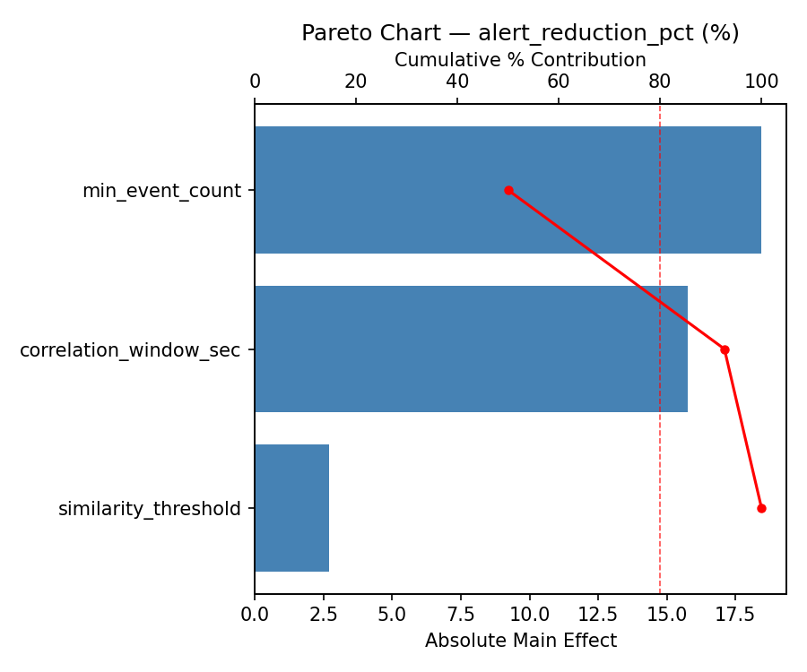
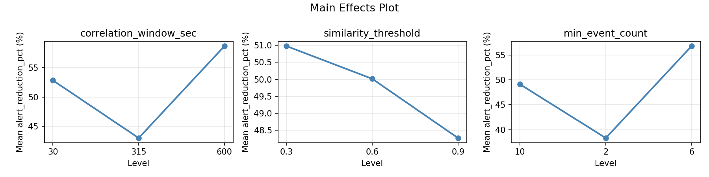
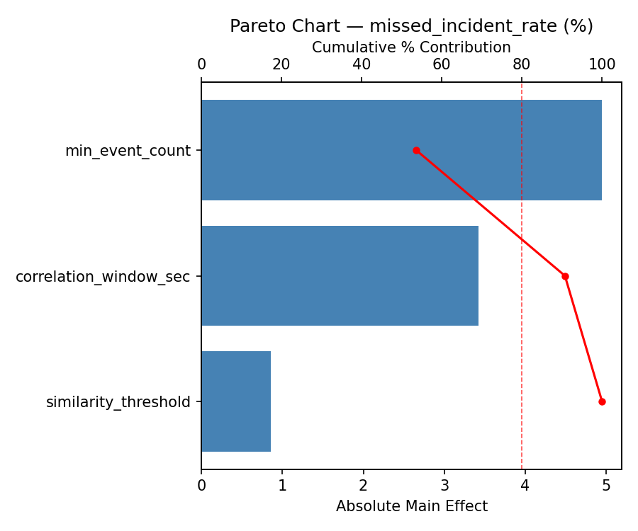
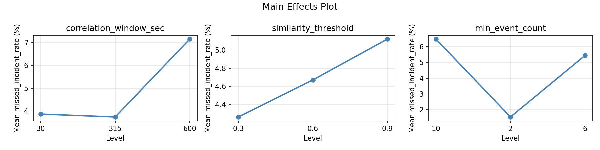
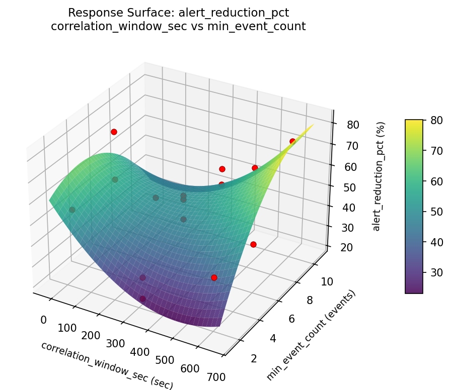
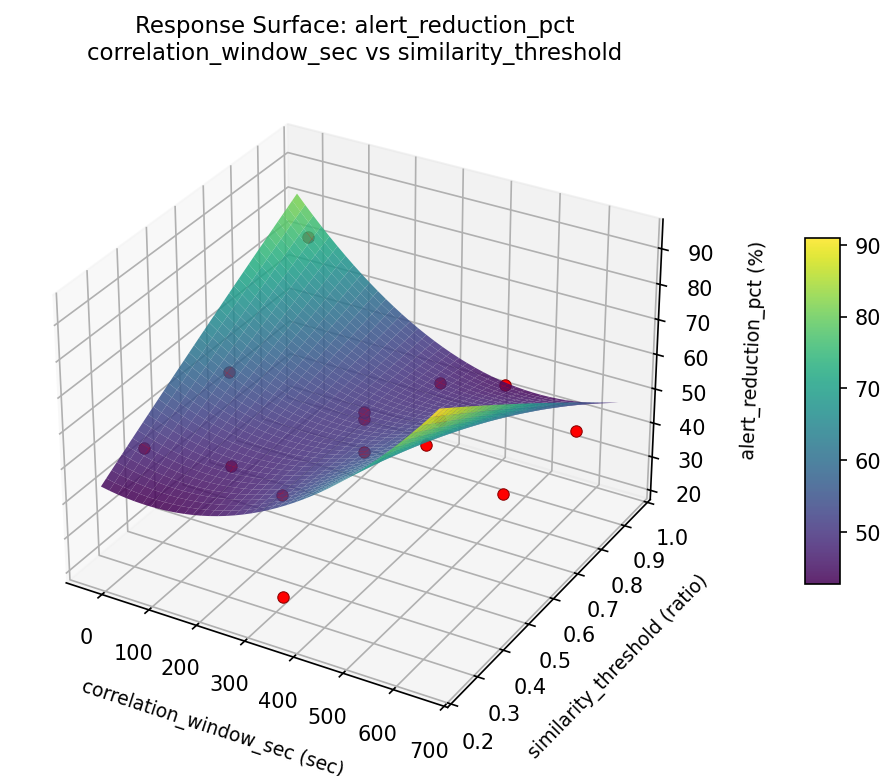
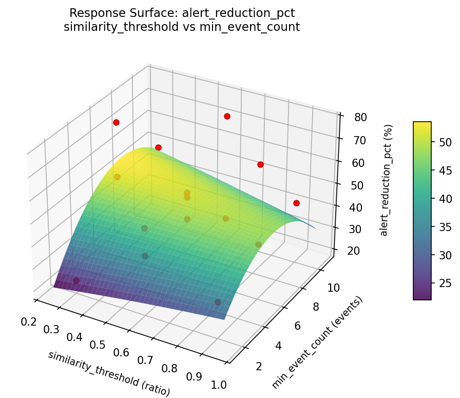
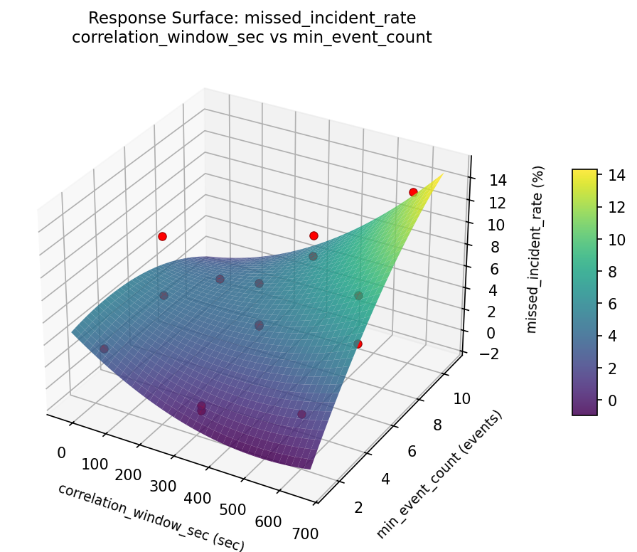
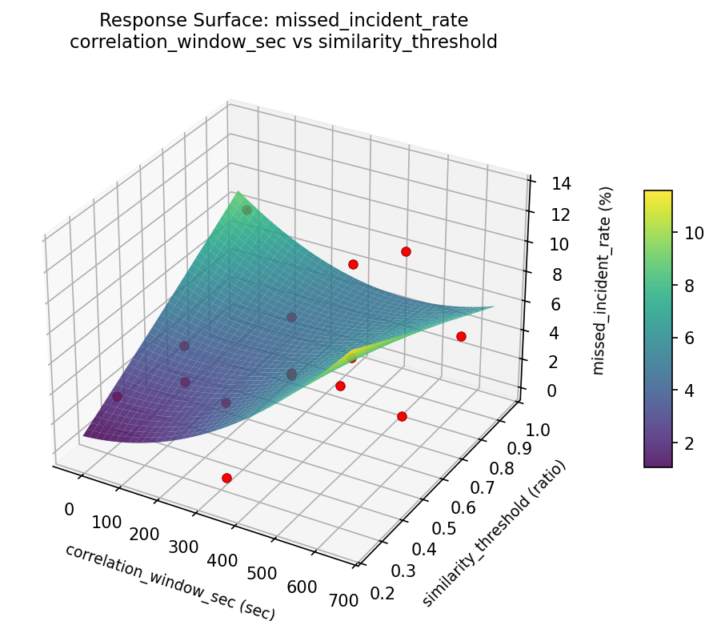
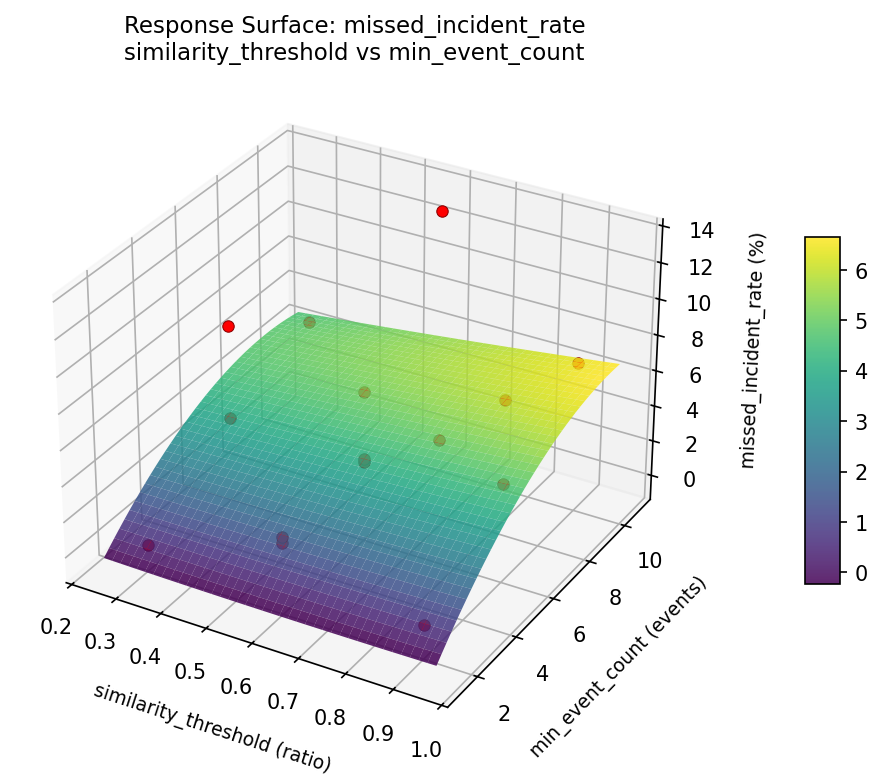

Summary
This experiment investigates siem alert correlation. Box-Behnken design to tune alert correlation window, similarity threshold, and event count for alert reduction.
The design varies 3 factors: correlation window sec (sec), ranging from 30 to 600, similarity threshold (ratio), ranging from 0.3 to 0.9, and min event count (events), ranging from 2 to 10. The goal is to optimize 2 responses: alert reduction pct (%) (maximize) and missed incident rate (%) (minimize). Fixed conditions held constant across all runs include siem platform = elastic_security, log sources = 12.
A Box-Behnken design was chosen because it efficiently fits quadratic models with 3 continuous factors while avoiding extreme corner combinations — requiring only 15 runs instead of the 8 needed for a full factorial at two levels.
Quadratic response surface models were fitted to capture potential curvature and factor interactions. The RSM contour plots below visualize how pairs of factors jointly affect each response.
Key Findings
For alert reduction pct, the most influential factors were correlation window sec (42.5%), similarity threshold (33.2%), min event count (24.3%). The best observed value was 77.0 (at correlation window sec = 315, similarity threshold = 0.9, min event count = 10).
For missed incident rate, the most influential factors were correlation window sec (37.0%), similarity threshold (33.1%), min event count (30.0%). The best observed value was 0.11 (at correlation window sec = 315, similarity threshold = 0.3, min event count = 2).
Recommended Next Steps
- Run confirmation experiments at the predicted optimal settings to validate the model.
- Consider whether any fixed factors should be varied in a future study.
Experimental Setup
Factors
| Factor | Low | High | Unit |
|---|
correlation_window_sec | 30 | 600 | sec |
similarity_threshold | 0.3 | 0.9 | ratio |
min_event_count | 2 | 10 | events |
Fixed: siem_platform = elastic_security, log_sources = 12
Responses
| Response | Direction | Unit |
|---|
alert_reduction_pct | ↑ maximize | % |
missed_incident_rate | ↓ minimize | % |
Configuration
{
"metadata": {
"name": "SIEM Alert Correlation",
"description": "Box-Behnken design to tune alert correlation window, similarity threshold, and event count for alert reduction"
},
"factors": [
{
"name": "correlation_window_sec",
"levels": [
"30",
"600"
],
"type": "continuous",
"unit": "sec"
},
{
"name": "similarity_threshold",
"levels": [
"0.3",
"0.9"
],
"type": "continuous",
"unit": "ratio"
},
{
"name": "min_event_count",
"levels": [
"2",
"10"
],
"type": "continuous",
"unit": "events"
}
],
"fixed_factors": {
"siem_platform": "elastic_security",
"log_sources": "12"
},
"responses": [
{
"name": "alert_reduction_pct",
"optimize": "maximize",
"unit": "%"
},
{
"name": "missed_incident_rate",
"optimize": "minimize",
"unit": "%"
}
],
"settings": {
"operation": "box_behnken",
"test_script": "use_cases/59_siem_alert_correlation/sim.sh"
}
}
Experimental Matrix
The Box-Behnken Design produces 15 runs. Each row is one experiment with specific factor settings.
| Run | correlation_window_sec | similarity_threshold | min_event_count |
|---|
| 1 | 315 | 0.3 | 2 |
| 2 | 315 | 0.6 | 6 |
| 3 | 600 | 0.6 | 10 |
| 4 | 600 | 0.6 | 2 |
| 5 | 315 | 0.6 | 6 |
| 6 | 315 | 0.6 | 6 |
| 7 | 30 | 0.6 | 10 |
| 8 | 600 | 0.3 | 6 |
| 9 | 315 | 0.3 | 10 |
| 10 | 600 | 0.9 | 6 |
| 11 | 30 | 0.6 | 2 |
| 12 | 315 | 0.9 | 10 |
| 13 | 30 | 0.3 | 6 |
| 14 | 30 | 0.9 | 6 |
| 15 | 315 | 0.9 | 2 |
Step-by-Step Workflow
1
Preview the design
$ python doe.py info --config use_cases/59_siem_alert_correlation/config.json
2
Generate the runner script
$ python doe.py generate --config use_cases/59_siem_alert_correlation/config.json \
--output use_cases/59_siem_alert_correlation/results/run.sh --seed 42
3
Execute the experiments
$ bash use_cases/59_siem_alert_correlation/results/run.sh
4
Analyze results
$ python doe.py analyze --config use_cases/59_siem_alert_correlation/config.json
5
Get optimization recommendations
$ python doe.py optimize --config use_cases/59_siem_alert_correlation/config.json
6
Multi-objective optimization
With 2 competing responses, use --multi to find the best compromise via Derringer–Suich desirability.
$ python doe.py optimize --config use_cases/59_siem_alert_correlation/config.json --multi
7
Generate the HTML report
$ python doe.py report --config use_cases/59_siem_alert_correlation/config.json \
--output use_cases/59_siem_alert_correlation/results/report.html
Features Exercised
| Feature | Value |
|---|
| Design type | box_behnken |
| Factor types | continuous (all 3) |
| Arg style | double-dash |
| Responses | 2 (alert_reduction_pct ↑, missed_incident_rate ↓) |
| Total runs | 15 |
Analysis Results
Generated from actual experiment runs using the DOE Helper Tool.
Response: alert_reduction_pct
Top factors: correlation_window_sec (42.5%), similarity_threshold (33.2%), min_event_count (24.3%).
Pareto Chart

Main Effects Plot

Response: missed_incident_rate
Top factors: correlation_window_sec (37.0%), similarity_threshold (33.1%), min_event_count (30.0%).
Pareto Chart

Main Effects Plot

Response Surface Plots
3D surfaces fitted with quadratic RSM. Red dots are observed data points.
alert reduction pct correlation window sec vs min event count

alert reduction pct correlation window sec vs similarity threshold

alert reduction pct similarity threshold vs min event count

missed incident rate correlation window sec vs min event count

missed incident rate correlation window sec vs similarity threshold

missed incident rate similarity threshold vs min event count

Multi-Objective Optimization
When responses compete, Derringer–Suich desirability finds the best compromise.
Each response is scaled to a 0–1 desirability, then combined via a weighted geometric mean.
Overall Desirability
D = 0.6594
Per-Response Desirability
| Response | Weight | Desirability | Predicted | Dir |
|---|
alert_reduction_pct |
1.5 |
|
77.00 0.9545 77.00 % |
↑ |
missed_incident_rate |
1.0 |
|
8.51 0.3787 8.51 % |
↓ |
Recommended Settings
| Factor | Value |
|---|
correlation_window_sec | 315 sec |
similarity_threshold | 0.9 ratio |
min_event_count | 10 events |
Source: from observed run #10
Trade-off Summary
Sacrifice = how much worse than single-objective best.
| Response | Predicted | Best Observed | Sacrifice |
|---|
missed_incident_rate | 8.51 | 0.11 | +8.40 |
Top 3 Runs by Desirability
| Run | D | Factor Settings |
|---|
| #4 | 0.6528 | correlation_window_sec=600, similarity_threshold=0.6, min_event_count=2 |
| #6 | 0.6413 | correlation_window_sec=30, similarity_threshold=0.3, min_event_count=6 |
Model Quality
| Response | R² | Type |
|---|
missed_incident_rate | 0.0214 | linear |
Full Multi-Objective Output
============================================================
MULTI-OBJECTIVE OPTIMIZATION
Method: Derringer-Suich Desirability Function
============================================================
Overall desirability: D = 0.6594
Response Weight Desirability Predicted Direction
---------------------------------------------------------------------
alert_reduction_pct 1.5 0.9545 77.00 % ↑
missed_incident_rate 1.0 0.3787 8.51 % ↓
Recommended settings:
correlation_window_sec = 315 sec
similarity_threshold = 0.9 ratio
min_event_count = 10 events
(from observed run #10)
Trade-off summary:
alert_reduction_pct: 77.00 (best observed: 77.00, sacrifice: +0.00)
missed_incident_rate: 8.51 (best observed: 0.11, sacrifice: +8.40)
Model quality:
alert_reduction_pct: R² = 0.0066 (linear)
missed_incident_rate: R² = 0.0214 (linear)
Top 3 observed runs by overall desirability:
1. Run #10 (D=0.6594): correlation_window_sec=315, similarity_threshold=0.9, min_event_count=10
2. Run #4 (D=0.6528): correlation_window_sec=600, similarity_threshold=0.6, min_event_count=2
3. Run #6 (D=0.6413): correlation_window_sec=30, similarity_threshold=0.3, min_event_count=6
Full Analysis Output
=== Main Effects: alert_reduction_pct ===
Factor Effect Std Error % Contribution
--------------------------------------------------------------
correlation_window_sec 11.5286 4.2596 42.5%
similarity_threshold 8.9929 4.2596 33.2%
min_event_count 6.5750 4.2596 24.3%
=== ANOVA Table: alert_reduction_pct ===
Source DF SS MS F p-value
-----------------------------------------------------------------------------
correlation_window_sec 2 478.4275 239.2138 0.331 0.7277
similarity_threshold 2 230.0622 115.0311 0.159 0.8555
min_event_count 2 86.8775 43.4388 0.060 0.9421
Lack of Fit 6 1568.9554 261.4926 0.362 0.8591
Pure Error 2 1445.9467 722.9733
Error 8 3014.9020 722.9733
Total 14 3810.2693 272.1621
=== Summary Statistics: alert_reduction_pct ===
correlation_window_sec:
Level N Mean Std Min Max
------------------------------------------------------------
30 4 55.3000 13.0366 43.2000 73.8000
315 7 43.7714 17.5150 22.4000 75.8000
600 4 54.8750 18.0862 32.7000 77.0000
similarity_threshold:
Level N Mean Std Min Max
------------------------------------------------------------
0.3 4 47.7000 20.8801 27.5000 77.0000
0.6 7 53.8429 18.1741 22.4000 75.8000
0.9 4 44.8500 9.8402 32.7000 53.0000
min_event_count:
Level N Mean Std Min Max
------------------------------------------------------------
10 4 53.2500 15.0423 41.0000 73.8000
2 4 46.6750 12.8500 27.5000 54.7000
6 7 49.6286 20.6124 22.4000 77.0000
=== Main Effects: missed_incident_rate ===
Factor Effect Std Error % Contribution
--------------------------------------------------------------
correlation_window_sec 3.3836 0.9476 37.0%
similarity_threshold 3.0289 0.9476 33.1%
min_event_count 2.7425 0.9476 30.0%
=== ANOVA Table: missed_incident_rate ===
Source DF SS MS F p-value
-----------------------------------------------------------------------------
correlation_window_sec 2 33.3434 16.6717 0.794 0.4845
similarity_threshold 2 23.3654 11.6827 0.557 0.5938
min_event_count 2 16.4245 8.2122 0.391 0.6884
Lack of Fit 6 73.4711 12.2452 0.584 0.7422
Pure Error 2 41.9699 20.9849
Error 8 115.4410 20.9849
Total 14 188.5743 13.4696
=== Summary Statistics: missed_incident_rate ===
correlation_window_sec:
Level N Mean Std Min Max
------------------------------------------------------------
30 4 7.1550 4.4418 3.1000 13.3700
315 7 3.7714 3.2148 0.1100 8.7700
600 4 3.8050 3.3681 0.5100 8.5100
similarity_threshold:
Level N Mean Std Min Max
------------------------------------------------------------
0.3 4 4.6350 3.7706 0.4200 8.5100
0.6 7 5.8014 4.3797 0.1100 13.3700
0.9 4 2.7725 1.5778 0.5100 4.1700
min_event_count:
Level N Mean Std Min Max
------------------------------------------------------------
10 4 5.7700 5.1116 2.5900 13.3700
2 4 3.0275 1.9450 0.4200 5.1300
6 7 5.0071 3.7062 0.1100 8.7700
Optimization Recommendations
=== Optimization: alert_reduction_pct ===
Direction: maximize
Best observed run: #10
correlation_window_sec = 315
similarity_threshold = 0.9
min_event_count = 10
Value: 77.0
RSM Model (linear, R² = 0.3517, Adj R² = 0.1749):
Coefficients:
intercept +49.8067
correlation_window_sec +5.7625
similarity_threshold +8.0875
min_event_count +8.3000
RSM Model (quadratic, R² = 0.4678, Adj R² = -0.4901):
Coefficients:
intercept +59.0333
correlation_window_sec +5.7625
similarity_threshold +8.0875
min_event_count +8.3000
correlation_window_sec*similarity_threshold +2.8500
correlation_window_sec*min_event_count -1.5750
similarity_threshold*min_event_count -1.2750
correlation_window_sec^2 -9.2417
similarity_threshold^2 -3.5417
min_event_count^2 -4.5167
Curvature analysis:
correlation_window_sec coef=-9.2417 concave (has a maximum)
min_event_count coef=-4.5167 concave (has a maximum)
similarity_threshold coef=-3.5417 concave (has a maximum)
Notable interactions:
correlation_window_sec*similarity_threshold coef=+2.8500 (synergistic)
correlation_window_sec*min_event_count coef=-1.5750 (antagonistic)
similarity_threshold*min_event_count coef=-1.2750 (antagonistic)
Predicted optimum (from linear model, at observed points):
correlation_window_sec = 315
similarity_threshold = 0.9
min_event_count = 10
Predicted value: 66.1942
Surface optimum (via L-BFGS-B, linear model):
correlation_window_sec = 600
similarity_threshold = 0.9
min_event_count = 10
Predicted value: 71.9567
Model quality: Weak fit — consider adding center points or using a different design.
Factor importance:
1. min_event_count (effect: 16.6, contribution: 35.2%)
2. similarity_threshold (effect: 16.2, contribution: 34.3%)
3. correlation_window_sec (effect: 14.4, contribution: 30.6%)
=== Optimization: missed_incident_rate ===
Direction: minimize
Best observed run: #13
correlation_window_sec = 315
similarity_threshold = 0.3
min_event_count = 2
Value: 0.11
RSM Model (linear, R² = 0.1484, Adj R² = -0.0839):
Coefficients:
intercept +4.6827
correlation_window_sec +0.2550
similarity_threshold +1.3213
min_event_count +1.2988
RSM Model (quadratic, R² = 0.4721, Adj R² = -0.4780):
Coefficients:
intercept +7.5200
correlation_window_sec +0.2550
similarity_threshold +1.3213
min_event_count +1.2988
correlation_window_sec*similarity_threshold -2.1275
correlation_window_sec*min_event_count -0.8775
similarity_threshold*min_event_count +0.0450
correlation_window_sec^2 -2.0650
similarity_threshold^2 -0.5575
min_event_count^2 -2.6975
Curvature analysis:
min_event_count coef=-2.6975 concave (has a maximum)
correlation_window_sec coef=-2.0650 concave (has a maximum)
similarity_threshold coef=-0.5575 concave (has a maximum)
Notable interactions:
correlation_window_sec*similarity_threshold coef=-2.1275 (antagonistic)
correlation_window_sec*min_event_count coef=-0.8775 (antagonistic)
Predicted optimum (from linear model, at observed points):
correlation_window_sec = 315
similarity_threshold = 0.9
min_event_count = 10
Predicted value: 7.3027
Surface optimum (via L-BFGS-B, linear model):
correlation_window_sec = 30
similarity_threshold = 0.3
min_event_count = 2
Predicted value: 1.8077
Model quality: Weak fit — consider adding center points or using a different design.
Factor importance:
1. min_event_count (effect: 3.8, contribution: 44.6%)
2. similarity_threshold (effect: 2.6, contribution: 30.9%)
3. correlation_window_sec (effect: 2.1, contribution: 24.4%)